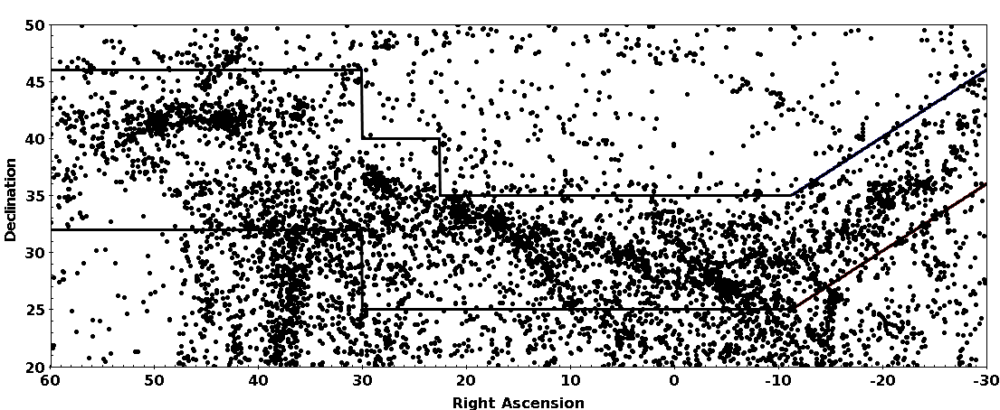
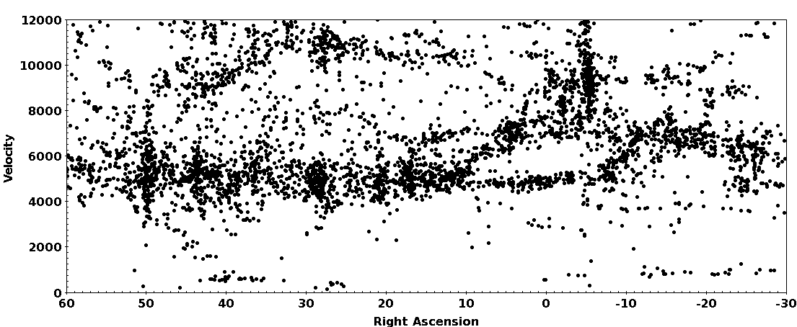

| Try to finish this activity by 4pm on Wednesday afternoon |

c. Which figure in the Wegner et al. paper is similar to this figure? What is different about the one displayed here?
f. What do we mean by "heliocentric velocity"?| Name | Common Name | R.A.(J2000) (deg) | Dec(J2000) (deg) |
cz (km/s) | N7343 | Pegasus | 339.7 | 34.0 | 6000. |
|---|---|---|---|---|
| Abell 2634 | 354.6 | 27.0 | 9400. | |
| Abell 2666 | Pegasus | 357.7 | 27.2 | 8000. |
| N 383 | Pisces | 16.9 | 32.4 | 4800. |
| N 507 | check | 20.5 | 33.3 | 4700. |
| Abell 262 | 28.2 | 36.2 | 4800. | |
| Abell 347 | 36.5 | 41.9 | 5600. | |
| Abell 426 | Perseus | 49.7 | 41.5 | 5500. |